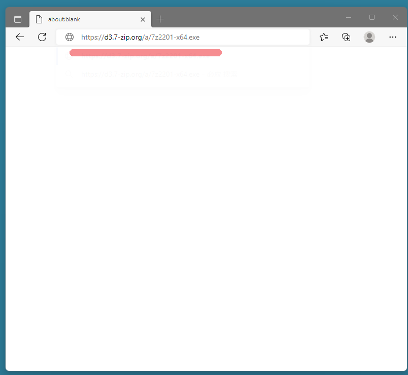
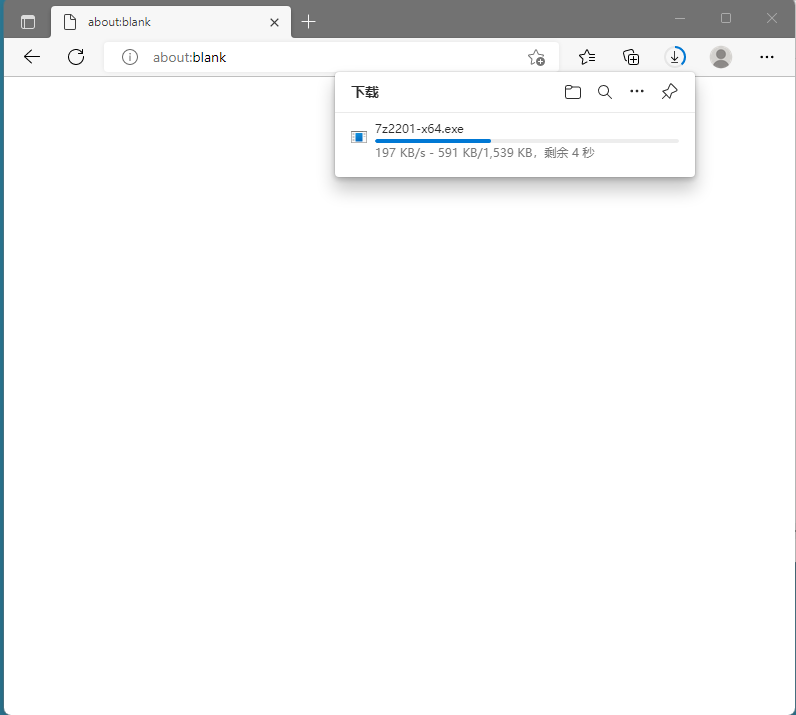
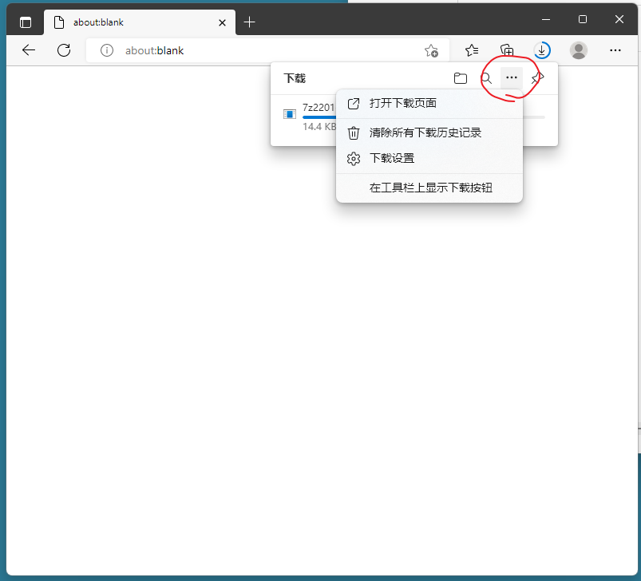
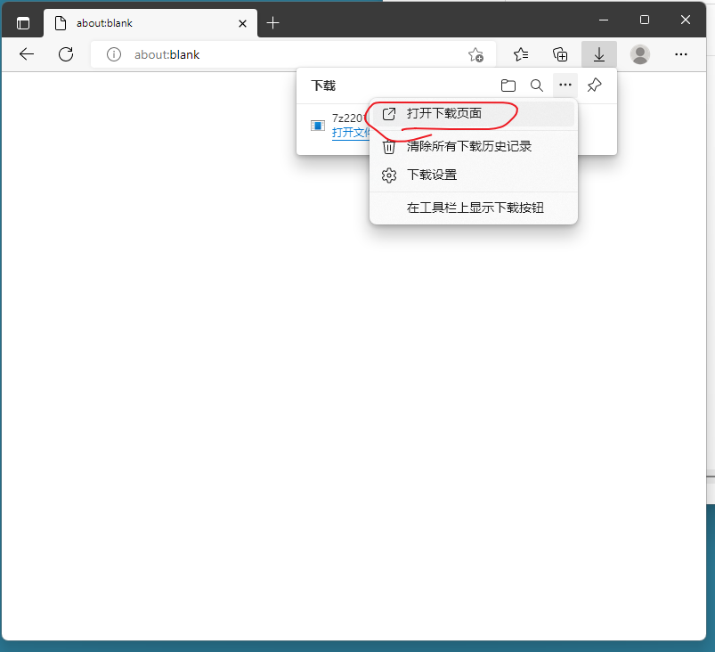
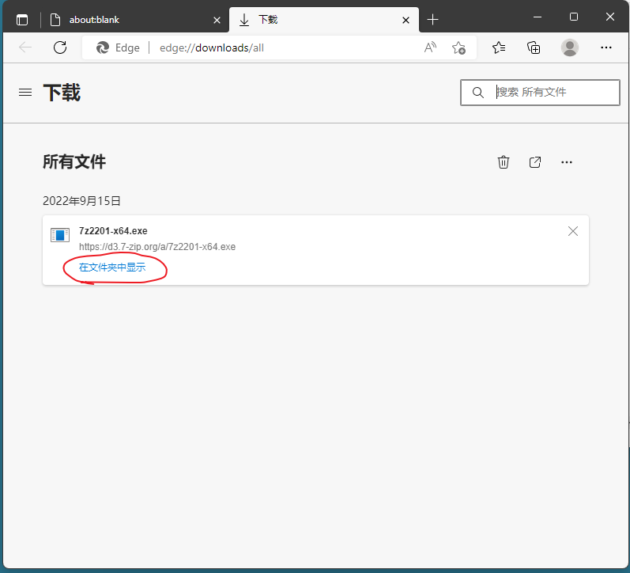
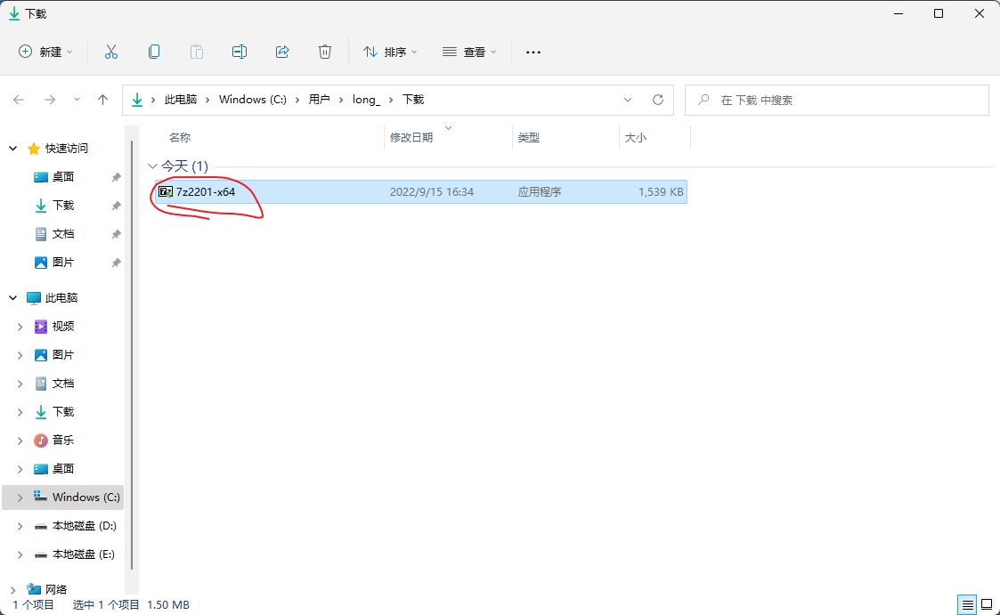

如何下载软件
本文以下载 7zip 安装程序为例。
1、打开浏览器
参考文章 https://codinglonglong.github.io/posts/ru-he-da-kai-liu-lan-qi.html
2、访问 7zip 的下载地址，在地址栏输入 https://d3.7-zip.org/a/7z2201-x64.exe
3、按回车键，浏览器开始下载。
4、点击图中圈红的地方。
5、点击【打开下载页面】。
6、等待文件下载完成，点击【在文件夹中显示】。
7、在弹出的资源管理器窗口中，即可看到下载好的文件。
